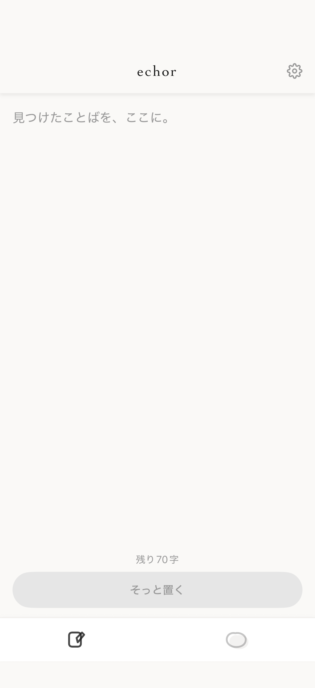
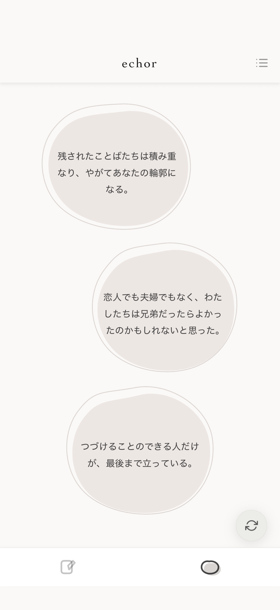

echorは、まだきれいにまとまっていない断片を残す場所です。
自分にとって大事なことばほど、散らばり見えなくなってしまう。
残されたことばたちは積み重なり、やがてあなたの輪郭になる。
買い物リスト
来週やること
恋人でも夫婦でもなく、わたしたちは兄妹だったらよかったのかもしれないと思った。
GW旅行メモ
Wi-Fi変更
請求書送付
つづけることのできる人だけが、最後まで立っている。
住所更新
解約手続き
散らばっていた大事なことばが、静かに積もり、残っていく。
忘れないため書く。
用が済んだら、消していく。
消さずに重ねる。
ことばは、少しずつあなたの輪郭になる。
完成させなくていい。
まだ名前のつかない感情のまま、
ふっと手放すように、ひとこと残す。

今日のあなたに、
数か月前の自分が置いた一行が、
静かに浮かびあがる。

AIは、
完成された文章を、
速く作ることができる。
だからこそ、
まだ、
うまく形にならないものを、
残しておきたくなる。
echorは、
“課題を解決する”ための
アプリではありません。
まだ、
断片でしかないことばを、
静かに置いておくための場所です。
断片で、いい。
まだことばにならないものを、
ここに。